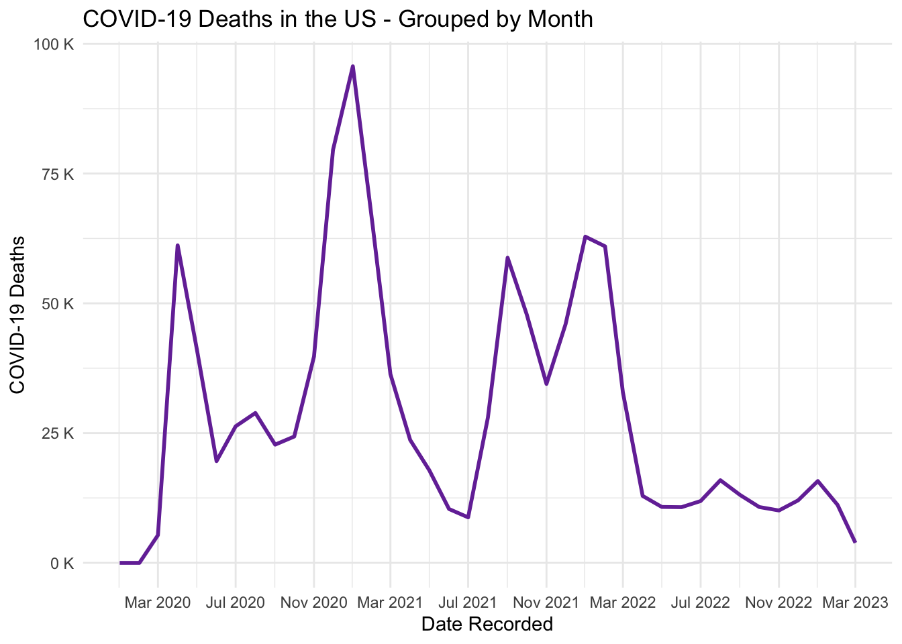

suppressPackageStartupMessages({
library("readr") # For reading in the data
library("tidyr") # For tidying data
library("dplyr") # For data manipulation
library("stringr") # For string manipulation
library("lubridate") # For date manipulation
library("ggplot2") # For creating static visualizations
library("scales") # For formatting plots axis
})
# Function to select "Not In"
'%!in%' <- function(x,y)!('%in%'(x,y))Worked-Through Example
Introduction
We will explore the tidyverse packages tidyr, dplyr, and stingr further with a worked-through example cleaning and visualizing COVID-19 daily death counts in the United States. The visualization will be prepared using another tidyverse package that was not discussed in this module. If you are interested in learning more about the ggplot2 package, please check out our workshop on the topic: Data Visualization with ggplot2.
Set Up the Environment
First, we will load the necessary libraries and any special functions used in the script.
Now we will fetch the semi-cleaned COVID-19 deaths data set that has been prepared for this example.
NoteData Source and Preparation Methods
The original, raw data comes from the Johns Hopkins University Coronavirus Resource Center (JHU CRC) Center for Systems Science and Engineering (CSSE) GitHub page: CSSEGISandData. Details about these steps can be found in the Intro-to-Programming-in-R/Code directory (link to code). The cleaned datasets are in the Intro-to-Programming-in-R/Data directory (link to data).
# Save the GitHub raw URL associated with our data set
df_url <- "https://raw.githubusercontent.com/ysph-dsde/Book-of-Workshops/refs/heads/main/Workshops/Intro-to-Programming-in-R/Data/Data%20for%20the%20Workshop_Aggregated%20by%20Month.csv"
# Read in the data set using the URL via the readr package
df_raw <- read_csv(file = df_url, show_col_types = FALSE)Before cleaning data, it’s good practice to review several aspects of your raw data:
- Review the variable Data Dictionary
- Check the dataset dimensions (rows and columns)
- Examine the first and/or last few rows
- Check the variable type for each column
Most of these operations can be accomplished using dplyr’s glimpse() function. Notice that only the first 7 columns are displayed here for readability; the full dataset contains 39 date columns.
# Preview the raw data
glimpse(df_raw[, 1:7])Rows: 3,394
Columns: 7
$ Combined_Key <chr> "Alabama, US", "Alaska, US", "American Samoa, US", "Ari…
$ County <chr> NA, NA, NA, NA, NA, NA, NA, NA, NA, NA, NA, NA, NA, NA,…
$ Province_State <chr> "Alabama", "Alaska", "American Samoa", "Arizona", "Arka…
$ Country_Region <chr> "US", "US", "US", "US", "US", "US", "US", "US", "US", "…
$ `2020-01-01` <dbl> 0, 0, 0, 0, 0, 0, 0, 0, 0, 0, 0, 0, 0, 0, 0, 0, 0, 0, 0…
$ `2020-02-01` <dbl> 0, 0, 0, 0, 0, 0, 0, 0, 0, 0, 0, 0, 0, 0, 0, 0, 0, 0, 0…
$ `2020-03-01` <dbl> 23, 3, 0, 25, 8, 170, 69, 69, 3, 9, 85, 111, 2, 0, 8, 9…We can see that the dataset contains 3394 unique regions throughout the U.S. at the county- and state-level, with 43 columns of information in total. The first 4 columns denote the geographic region in different formats, while the remaining 39 columns represent specific dates when COVID-19 deaths were added to the running tally. Importantly, all counts are reported as cumulative values (monotonically increasing) and have been summarized at monthly time intervals.
Regional identifier columns are classified as characters (<chr>), which is appropriate for text-based data. Death count columns are classified as double, meaning they are double-precision floating-point numbers—a numeric type that allows decimal values. Since deaths must be whole numbers (you can’t have a fractional death), we need to convert these to integers, rounding down.
In the following sections, we will continue reviewing additional aspects of our dataset. Before we proceed, however, we need to tidy our data first.
Clean Messy Data Using tidyr
As we saw in the previous section, observations are stored as columns, creating a wide dataset. To transform this into our target “tidy” format, columns need to represent only variables—not individual observations. We achieve this by converting date columns into rows, creating a long dataset. Fortunately, tidyr provides the perfect function for this transformation: pivot_longer(). We simply tell it which columns to pivot into rows.
# Find the first and last dates in our array
str_c(c("Start date: ", "End date: "), colnames(df_raw)[c(5, ncol(df_raw))])[1] "Start date: 2020-01-01" "End date: 2023-03-01" Using the start and end column names, we can pivot the date columns into a long format. We need to name two new columns for this operation: one to hold the pivoted column names (our dates), and another to hold their corresponding values. Note that the colon in “2020-01-01:2023-03-01” tells the function to include all consecutive columns between the start and end positions.
df_long <- df_raw |>
# Step 1: Convert wide format date columns to long format
pivot_longer(
# Designate which columns need to be pivoted
cols = "2020-01-01":"2023-03-01",
# Name the variable that will store newly pivoted column names
names_to = "Date",
# Name the variable that will store respective cell values
values_to = "Deaths_Count_Cumulative"
) |>
# Step 2: Change table format to "data frame" class for convenience
as.data.frame()
# Inspect the pivoted data
glimpse(df_long)Rows: 132,366
Columns: 6
$ Combined_Key <chr> "Alabama, US", "Alabama, US", "Alabama, US", "…
$ County <chr> NA, NA, NA, NA, NA, NA, NA, NA, NA, NA, NA, NA…
$ Province_State <chr> "Alabama", "Alabama", "Alabama", "Alabama", "A…
$ Country_Region <chr> "US", "US", "US", "US", "US", "US", "US", "US"…
$ Date <chr> "2020-01-01", "2020-02-01", "2020-03-01", "202…
$ Deaths_Count_Cumulative <dbl> 0, 0, 23, 272, 630, 950, 1580, 2182, 2540, 296…[1] "Number of rows: 132366" "Number of columns: 6" This looks much better! Each column now represents one variable, and each row represents one observation—matching a specific region with a specific date. Notice that we waited until now to change the death counts from doubles to integers. Why? Because with tidy data, this conversion is much simpler.
# Convert double to integer
df_long$Deaths_Count_Cumulative <- as.integer(df_long$Deaths_Count_Cumulative)
# Use the Higher-Order function sapply() to get all variable classes
sapply(df_long, class) |>
# Convert from a vector to a data frame for easier reading
as.data.frame() |>
# Change the column name for clarity
`colnames<-`("Variable Class") Variable Class
Combined_Key character
County character
Province_State character
Country_Region character
Date character
Deaths_Count_Cumulative integerTechnically, our dataset is now “tidy.” But remember: tidy is just one step. We may still need additional cleaning and standardization. In the following sections, we’ll continue preparing the data for visualization and analysis.
Manipulate Data Using dplyr
Suppose we want to plot COVID-19 deaths across the entire U.S. First, we need to calculate total counts by summing deaths for each region (Combined_Key) on each date (Date). However, our dataset contains cumulative counts, which are difficult to interpret for visualization. We’ll need to back-calculate monthly counts to show new deaths each month.
The dplyr package offers a suite of functions for data manipulation tasks like these. In the next four code blocks, we’ll show how to generate counts for the entire U.S.
Calculate Total U.S. Counts
Recall that the imported dataset includes values for U.S. counties, states, and territories. To calculate values for the U.S. as a whole, we need to focus only on the 50 states plus the District of Columbia. We can achieve this by filtering for Combined_Key entries that match those state names using the filter() function.
We’re using str_c() from the stringr package here (string concatenate) to create a vector of state names for matching. We’ll explore this function in detail in the next section.
Step 1: Filter subsets the data set by rows that match the condition.
df_filtered <- df_long |>
filter(Combined_Key %in% str_c(c(datasets::state.name, "District of Columbia"), ", US"))The full dataset has 132366 rows. After filtering, we have 1989 remaining—one for each U.S. state plus the District of Columbia across all months. Recall that observations were recorded over 39 months during the pandemic, so we expect 1989/39 = 51 unique regions.
Using this filtered dataset, we’ll group rows by month using group_by(). The table below uses tally() to show how many rows are in each monthly group.
TipCode Like a Pro
It’s crucial to verify that your dataset is structured correctly and contains expected values. Since most datasets are too large for line-by-line inspection, use a different strategy: identify what features you expect in your data (like the 51 regions above) and verify them systematically.
This approach allows you to thoroughly validate that your dataset meets all expectations and requirements.
Step 2: Group the table by unique entries in Date.
df_grouped <- df_filtered |>
group_by(Date)
# Display the number of entries associated with each group using tally()
df_grouped |> tally() |>
# Use an "anonymous function" to help pass the object from the
# left side to the right side of the pipe
(\(x) list("Tally" = head(x), "Unique n" = unique(x$n)))()$Tally
# A tibble: 6 × 2
Date n
<chr> <int>
1 2020-01-01 51
2 2020-02-01 51
3 2020-03-01 51
4 2020-04-01 51
5 2020-05-01 51
6 2020-06-01 51
$`Unique n`
[1] 51As expected, we have 51 row entries that are being grouped by each month recorded. Now we are ready to calculate the total U.S. counts. The function summarize() allows us to iterate a function over each grouping. If necessary, the function can be prompted to retain previously designated groups using .groups = "keep".
Step 3: Calculate the cumulative deaths variable for the U.S. by summing over the grouped rows.
df_US <- df_grouped |>
summarize(Deaths_Count_Cumulative = sum(Deaths_Count_Cumulative), .groups = "keep")Finally, we need to remove the groupings so we can work with the whole data set again.
Step 4: Remove grouping applied to the dataset object.
df_US <- df_US |>
ungroup()After these four operations, we get the following data set:
head(df_US)# A tibble: 6 × 2
Date Deaths_Count_Cumulative
<chr> <int>
1 2020-01-01 1
2 2020-02-01 2
3 2020-03-01 5335
4 2020-04-01 66500
5 2020-05-01 107705
6 2020-06-01 127302Next, we’ll merge this data back with the main dataframe using bind_rows(), a tidyverse function similar todo.call() that fills missing columns with NA to maintain all uniquely defined variables. However, df_US is currently missing the Combined_Key and Country_Region columns. If we merge now, both will be filled with NA. Instead, we want them to contain “US”. We can add these columns using mutate(), which creates new columns from functions of existing columns or static values.
df_US <- df_US |>
mutate(Combined_Key = "US", Country_Region = "US")
head(df_US)# A tibble: 6 × 4
Date Deaths_Count_Cumulative Combined_Key Country_Region
<chr> <int> <chr> <chr>
1 2020-01-01 1 US US
2 2020-02-01 2 US US
3 2020-03-01 5335 US US
4 2020-04-01 66500 US US
5 2020-05-01 107705 US US
6 2020-06-01 127302 US US Great, now that we have all the columns we need we are ready to merge it with df_long.
df <- bind_rows(df_US, df_long)
head(df)# A tibble: 6 × 6
Date Deaths_Count_Cumulat…¹ Combined_Key Country_Region County Province_State
<chr> <int> <chr> <chr> <chr> <chr>
1 2020… 1 US US <NA> <NA>
2 2020… 2 US US <NA> <NA>
3 2020… 5335 US US <NA> <NA>
4 2020… 66500 US US <NA> <NA>
5 2020… 107705 US US <NA> <NA>
6 2020… 127302 US US <NA> <NA>
# ℹ abbreviated name: ¹Deaths_Count_Cumulativetail(df)# A tibble: 6 × 6
Date Deaths_Count_Cumulat…¹ Combined_Key Country_Region County Province_State
<chr> <int> <chr> <chr> <chr> <chr>
1 2022… 3 Grand Princ… US <NA> Grand Princess
2 2022… 3 Grand Princ… US <NA> Grand Princess
3 2022… 3 Grand Princ… US <NA> Grand Princess
4 2023… 3 Grand Princ… US <NA> Grand Princess
5 2023… 3 Grand Princ… US <NA> Grand Princess
6 2023… 3 Grand Princ… US <NA> Grand Princess
# ℹ abbreviated name: ¹Deaths_Count_CumulativeThe select() function is used to keep, drop, or organize columns. In our case, we will use it to reorganize the columns. We want to arrange the columns such that we have the region first, followed by the month the record was made, and then the cumulative deaths recorded.
df <- df |>
select(Combined_Key, County, Province_State, Country_Region, Date, Deaths_Count_Cumulative)
head(df)# A tibble: 6 × 6
Combined_Key County Province_State Country_Region Date Deaths_Count_Cumulat…¹
<chr> <chr> <chr> <chr> <chr> <int>
1 US <NA> <NA> US 2020… 1
2 US <NA> <NA> US 2020… 2
3 US <NA> <NA> US 2020… 5335
4 US <NA> <NA> US 2020… 66500
5 US <NA> <NA> US 2020… 107705
6 US <NA> <NA> US 2020… 127302
# ℹ abbreviated name: ¹Deaths_Count_CumulativeBack-Calculate Monthly Updates
Now we are ready to calculate the monthly death counts from the cumulative counts. Earlier, we mentioned that mutate() can be used to generate new columns as functions of existing columns. Here, we will generate a new column using diff() to back-calculate the values added each month.
df <- df |>
# Group data by Combined_Key
group_by(Combined_Key) |>
# Ensure data is sorted by Date within each group
arrange(Date) |>
# Calculate daily monthly deaths counts using mutate
mutate(Deaths_Count_Monthly = Deaths_Count_Cumulative - lag(Deaths_Count_Cumulative, default = 0)) |>
ungroup() |>
# Change table format to "data frame" for convenience
as.data.frame()
head(df) Combined_Key County Province_State Country_Region Date
1 US <NA> <NA> US 2020-01-01
2 Alabama, US <NA> Alabama US 2020-01-01
3 Alaska, US <NA> Alaska US 2020-01-01
4 American Samoa, US <NA> American Samoa US 2020-01-01
5 Arizona, US <NA> Arizona US 2020-01-01
6 Arkansas, US <NA> Arkansas US 2020-01-01
Deaths_Count_Cumulative Deaths_Count_Monthly
1 1 1
2 0 0
3 0 0
4 0 0
5 0 0
6 0 0
TipCode Like a Pro
It is important to ensure that your methods are accurate! For example, suppose you want to confirm the accuracy of directly calculating the cumulative counts for the U.S. over all 39 months. To do this, you can compare this direct approach (call this method “a”) with an indirect method (call this method “b”). The indirect method first calculates the daily counts, sums these counts across all states, and then generates the cumulative counts.
## --------------------
## Aggregate states directly from the cumulative counts
a <- df_filtered |>
# Group data by Date
group_by(Date) |>
# Calculate the total cumulative deaths for each Date
summarize(total_method_a = sum(Deaths_Count_Cumulative))
## --------------------
## First calculate the daily value, then recalculate the cumulative count
b <- df_filtered |>
# Group data by Combined_Key
group_by(Combined_Key) |>
# Ensure data is sorted by Date within each group
arrange(Date) |>
# Calculate daily increments
mutate(increment = Deaths_Count_Cumulative - lag(Deaths_Count_Cumulative, default = 0)) |>
# Ungroup to remove group structure
ungroup()
b <- b |>
# Group data by Date
group_by(Date) |>
# Sum daily increments for each Date to get total increments
summarize(total_increment = sum(increment)) |>
# Calculate the cumulative sum of the total increments for each Date
reframe(total_method_b = cumsum(total_increment)) |>
ungroup()
## --------------------
## Compare the two methods to confirm they are the same. If they are, then the return
## value should be zero.
bind_cols(a, b) |>
# Apply row-wise operations
rowwise() |>
# Calculate the absolute difference between the two cumulative totals
summarize(diff = abs(total_method_a - total_method_b)) |>
# Extract unique values of the differences
(\(x) unique(x$diff))()[1] 0String Manipulation Using stringr
After completing data wrangling and tidying, it’s good practice to review variable classifications and naming conventions before proceeding with calculations. For instance, if you have a variable for participant sex, ensure all entries are consistently labeled (e.g., “M” for Male, “F” for Female). Also confirm that zeros aren’t used in place of NA for missing values, or vice versa.
Let’s start by examining the variable classifications again.
sapply(df, class) |>
as.data.frame() |>
`colnames<-`("Variable Class") Variable Class
Combined_Key character
County character
Province_State character
Country_Region character
Date character
Deaths_Count_Cumulative integer
Deaths_Count_Monthly integerThe variables are mostly assigned to appropriate data classes. One exception: Date is a character but would be better as a date class for easier manipulation. We can convert it using the lubridate package from tidyverse. This package isn’t covered in this introductory lecture, but you can review the documentation here: lubridate.
The data is reported inyyyy/mm/dd format, so we use ymd() to convert the character to the date class.
df$Date <- ymd(df$Date)Validate the Accuracy of Entries
For simplicity, we’ll assume county-level entries are accurate and skip validation here, though in real analysis you’d want to verify this. We will, however, check that all U.S. states and territories appear in the state-level data by comparing unique Combined_Key values to datasets::state.name and the District of Columbia.
# Find the non-states represented in the state-level data set
unique(df$Province_State)[unique(df$Province_State) %!in% c(datasets::state.name, "District of Columbia")][1] NA "American Samoa"
[3] "Guam" "Northern Mariana Islands"
[5] "Puerto Rico" "Virgin Islands"
[7] "Diamond Princess" "Grand Princess" NA values appear in the results. This makes sense because country-level aggregates don’t have state values, so they show as NA at the state level. We can verify this to ensure all rows where Province_State = NA the Combined_Key = "US".
# Confirm assumption to check for possible source of irregularity
df[df$Province_State %in% NA, "Combined_Key"] |> unique()[1] "US"Beyond the five U.S. territories, we also see entries for two cruise ships. Since these aren’t relevant to our analysis, we’ll exclude them using str_detect() or str_which(). Both functions identify rows matching a string pattern—str_detect() returns Boolean values (TRUE/FALSE) while str_which() returns row indices.
Option #1: Use the Boolean test to detect the presence of the “Princess” string and pull the matches. The added %in% TRUE expression ensures that NA outcomes are interpreted as FALSE.
df_filtered <- df[!str_detect(df$Province_State, "Princess") %in% TRUE, ]Option #2: Identify indices containing “Princess”, then subset using the indices that don’t.
df_filtered <- df[-str_which(df$Province_State, "Princess"), ]
Warning
While str_which(df$Combined_Key, "Princess", negate = TRUE) works in many scenarios, it would exclude rows where Combined_Key is NA. The version above preserves those rows.
This filtering removes the following number of rows, representing two unique regions with 39 dates each, as expected.
(nrow(df) - nrow(df_filtered))/2[1] 39Generating New String Vectors
A common task is creating new string vectors from existing ones. Combined_Key combines information from County, Province_State, and Country_Region. Suppose we only have county-level data and want to generate state- and country-level Combined_Key values. We can do this with str_c() or str_split().
For this example, we’ll first subset to county-level data only. We can use str_count() to count how many times a pattern appears in each string. Since county-level data contains two commas, we’ll filter using that pattern.
df_state_level <- df_filtered[str_count(df_filtered$Combined_Key, ",") == 2, ]Option #1: Generate a new column by combining the desired columns with ", " as the separator.
str_c(df_state_level$Province_State, df_state_level$Country_Region, sep = ", ") |> unique() [1] "South Carolina, US" "Louisiana, US"
[3] "Virginia, US" "Idaho, US"
[5] "Iowa, US" "Kentucky, US"
[7] "Missouri, US" "Oklahoma, US"
[9] "Colorado, US" "Illinois, US"
[11] "Indiana, US" "Mississippi, US"
[13] "Nebraska, US" "North Dakota, US"
[15] "Ohio, US" "Pennsylvania, US"
[17] "Washington, US" "Wisconsin, US"
[19] "Vermont, US" "Puerto Rico, US"
[21] "Minnesota, US" "Florida, US"
[23] "North Carolina, US" "California, US"
[25] "New York, US" "Wyoming, US"
[27] "Michigan, US" "Alaska, US"
[29] "Maryland, US" "Kansas, US"
[31] "Tennessee, US" "Texas, US"
[33] "Maine, US" "Arizona, US"
[35] "Georgia, US" "Arkansas, US"
[37] "New Jersey, US" "South Dakota, US"
[39] "Alabama, US" "Oregon, US"
[41] "West Virginia, US" "Massachusetts, US"
[43] "Utah, US" "Montana, US"
[45] "New Hampshire, US" "New Mexico, US"
[47] "Rhode Island, US" "Nevada, US"
[49] "District of Columbia, US" "Connecticut, US"
[51] "Hawaii, US" "Delaware, US" Option #2: Split the string only to the first observation of the deliminator.
Note
By setting n = 2, we are restricting str_split() to return a maximum of 2 new vectors after the split operation. This means the function will split the string only at the first occurrence of the delimiter. Including the simplify = TRUE argument converts the output from a list (with each output as a separate list element) to a matrix, making it easier to handle the resulting data.
str_split(df_state_level$Combined_Key, ",", simplify = TRUE, n = 2) |>
# Save the second column of information containing the state- and country-level
# regional information. Notice the use of the underscore as a placeholder for
# the piped data.
_[, 2] |>
# Trim whitespace from both sides of the resulting strings
str_trim(side = "both") |> unique() [1] "South Carolina, US" "Louisiana, US"
[3] "Virginia, US" "Idaho, US"
[5] "Iowa, US" "Kentucky, US"
[7] "Missouri, US" "Oklahoma, US"
[9] "Colorado, US" "Illinois, US"
[11] "Indiana, US" "Mississippi, US"
[13] "Nebraska, US" "North Dakota, US"
[15] "Ohio, US" "Pennsylvania, US"
[17] "Washington, US" "Wisconsin, US"
[19] "Vermont, US" "Puerto Rico, US"
[21] "Minnesota, US" "Florida, US"
[23] "North Carolina, US" "California, US"
[25] "New York, US" "Wyoming, US"
[27] "Michigan, US" "Alaska, US"
[29] "Maryland, US" "Kansas, US"
[31] "Tennessee, US" "Texas, US"
[33] "Maine, US" "Arizona, US"
[35] "Georgia, US" "Arkansas, US"
[37] "New Jersey, US" "South Dakota, US"
[39] "Alabama, US" "Oregon, US"
[41] "West Virginia, US" "Massachusetts, US"
[43] "Utah, US" "Montana, US"
[45] "New Hampshire, US" "New Mexico, US"
[47] "Rhode Island, US" "Nevada, US"
[49] "District of Columbia, US" "Connecticut, US"
[51] "Hawaii, US" "Delaware, US" Standardizing Nomenclature
As a final step, we’ll refine the naming for clarity and consistency. Suppose we want to specify that Virgin Islands entries refer only to the U.S. territory. We can do this using str_replace() to replace specific string patterns.
Going forward, we only require the Combined_Key variable, as the Country_Region, Province_State, and County variables are succinctly represented there. We can adjust the "Virgin Islands" entries for that column only.
df_filtered[, "Combined_Key"] <- str_replace(df_filtered[, "Combined_Key"], "Virgin Islands", "US Virgin Islands")We can adjust multiple columns at once using the higher-order function sapply(). However, the base R pipe’s _ placeholder doesn’t work with sapply(). To work around this, we wrap sapply() within the pipe and define our own placeholder for the incoming data. Here we use x within a temporary function. This temporary function is called an “anonymous function”—a concept we’ve used earlier in this example.
# Identify the row indices where "Virgin Islands" is detected in "Province_State".
index = str_which(df_filtered[, c("Province_State")], "Virgin Islands")
df_filtered[index, c("Province_State", "Combined_Key")] |>
# Define the anonymous function of this pipe-level and specify the information from
# the left to be "x".
(\(x) {
# Apply the str_replace() function over "Province_State" and "Combined_Key".
# Notice that the added "^ " is a regex statement that defines a hard
# boundary on the string.
sapply(x, function(y) str_replace(y, "^Virgin Islands", "US Virgin Islands"))
}) () |>
# Show that the changes have been completed.
_[1:10, ] Province_State Combined_Key
[1,] "US Virgin Islands" "US Virgin Islands, US"
[2,] "US Virgin Islands" "US Virgin Islands, US"
[3,] "US Virgin Islands" "US Virgin Islands, US"
[4,] "US Virgin Islands" "US Virgin Islands, US"
[5,] "US Virgin Islands" "US Virgin Islands, US"
[6,] "US Virgin Islands" "US Virgin Islands, US"
[7,] "US Virgin Islands" "US Virgin Islands, US"
[8,] "US Virgin Islands" "US Virgin Islands, US"
[9,] "US Virgin Islands" "US Virgin Islands, US"
[10,] "US Virgin Islands" "US Virgin Islands, US"Now we commit our changes to the primary dataframe label.
df <- df_filteredVisualization: Daily COVID-19 Death Counts
To conclude the example, we will plot our tidy dataset and display the newly calculated country-wide counts.
plot_deaths <- df |>
# Select entries only reflecting country-level data
filter(Combined_Key == "US") |>
ggplot(aes(x = Date, y = Deaths_Count_Monthly)) +
# Visualize as a line-plot
geom_line(color = "#7634A6", linewidth = 1) +
# Format the y-axis to show values in terms of thousands
scale_y_continuous(labels = unit_format(unit = "K", scale = 1e-3)) +
# Format the x-axis to show dates as Jan 2020 from 01/01/2020, spaced
# every four months
scale_x_date(date_breaks = "4 month", date_labels = "%b %Y") +
labs(x = "Date Recorded", y = "COVID-19 Deaths",
title = "COVID-19 Deaths in the US - Grouped by Month") +
theme_minimal()
plot_deaths
Discussion Questions
- Calculate the average monthly death counts for each state by year and determine the year with the highest average monthly death counts for each state. Are there any states that had more than one year with the same mean cases? HINT: You will need the
year()function fromlubridate.
- We want to see how many counties called “Clark” are represented in the data set.
How many counties include the word Clark?
- Make two variables: one that subsets
dffor matches and one listing the unique county names found. - Use
stringrto extract the county name only. - Finish the
str_c()statement started below to summarize your findings.
- Make two variables: one that subsets
Are the results what we expected, or what we wanted? If we strictly wanted counties named “Clark”, how might we improve the script to achieve this?
## --------------------
## part a
# Var #1
#__
# Var #2
#__
# Finish the summary statement.
# HINT: We expect 39 replicates per county for the 39 dates recorded.
str_c("There are ",
# Number of unique counties represented in the dataset.
#__
" counties with 'Clark' in the name: "
# The unique ways "Clark" is represented in these counties.
#__
)[1] "There are counties with 'Clark' in the name: "## --------------------
## part b